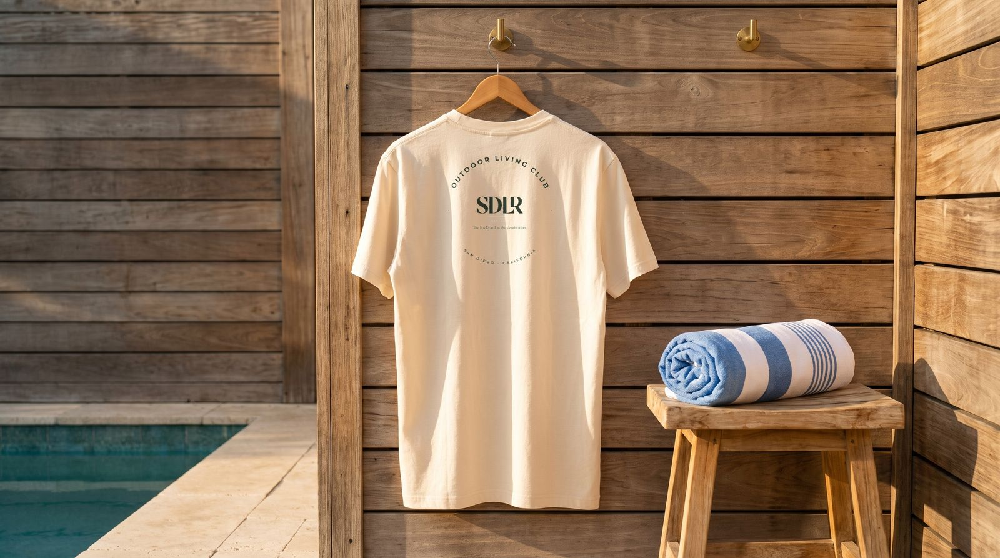
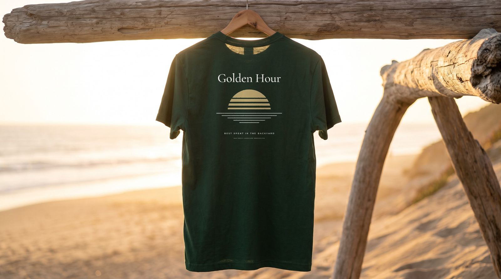
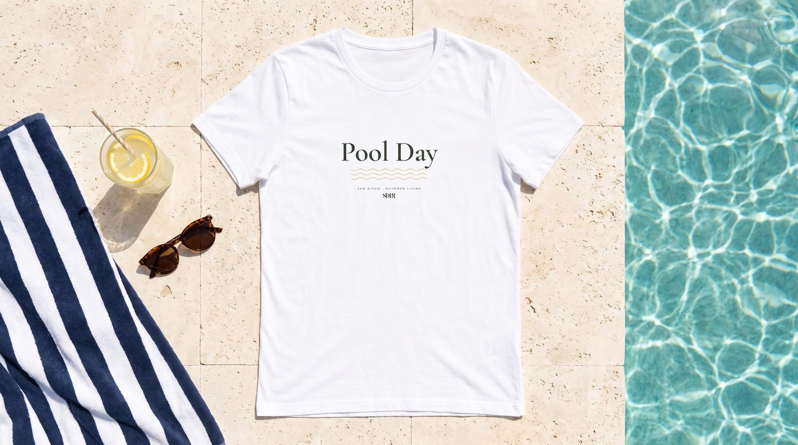
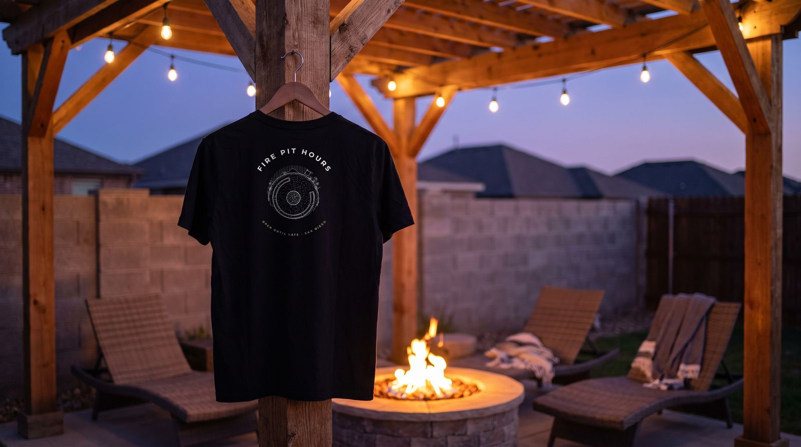
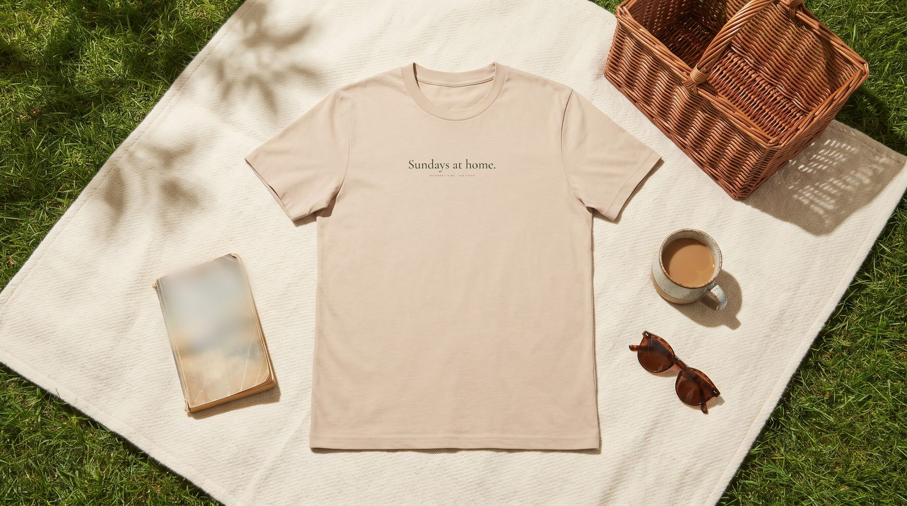
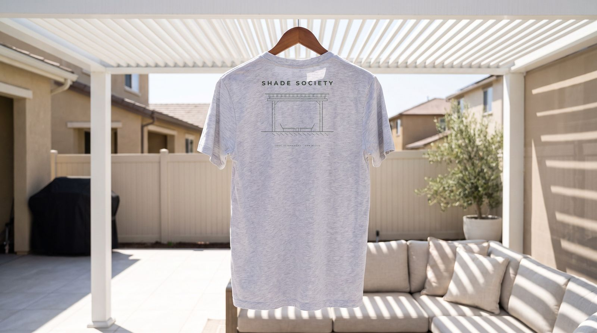
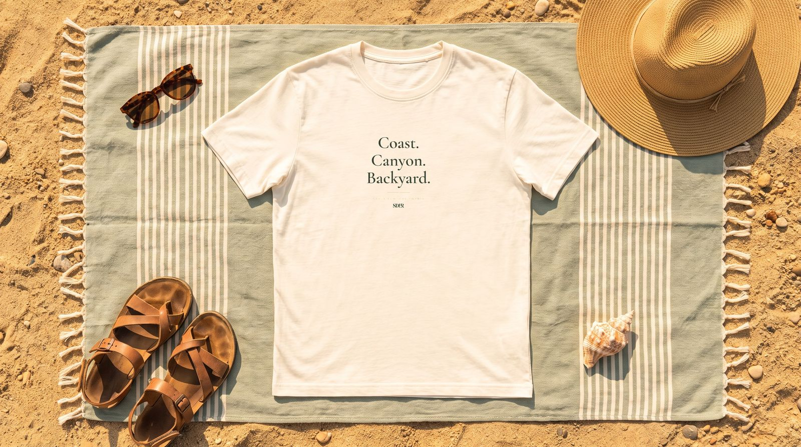
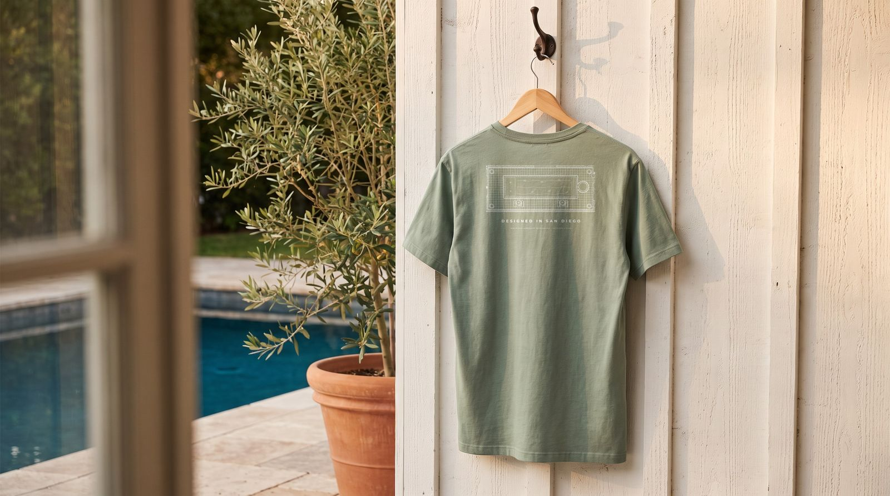
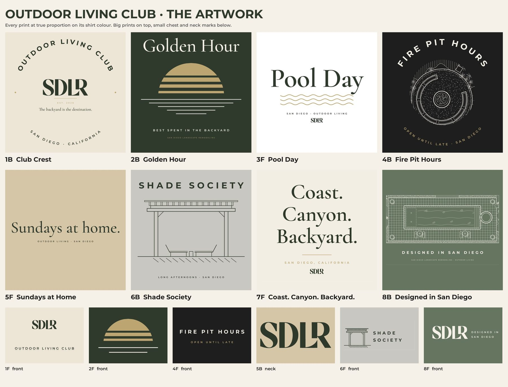

A lifestyle line from SDLR for friends and family, clients, referral partners and the community, and maybe one day for sale. Casual tees for the beach, the park or a pool day, with an outdoor-living, enjoy-your-home feel.
WaitingRound 1: eight directions. Pick favourites and round 2 refines them.









| File | One layered Illustrator file, 14 artboards (one per print location), live type, the monogram from the brand vector set, and a hidden shirt-colour preview layer. |
| Inks | Forest #2E382B, Gold #BDA572, Cream #F5F1E8 (spot colours, so each is one screen). Shirts: natural, forest, white, black, sand, heather grey, ivory, sage. |
| Type | Cormorant Garamond and Montserrat, the brand faces. |
| Sizes | Chest marks 3 to 4 in, fronts 6.5 to 9 in, backs 11 to 12 in. |
| Mockups | Photographed blank shirts with no people (the SDLR image rule), with the exact print artwork laid on and lit by each scene. |
The layered Illustrator file, mockups and README are in Drive under 02 Clients/san-diego-landscape-remodeling/assets/print-ready/apparel/2026-11-22-lifestyle-collection-v1/.